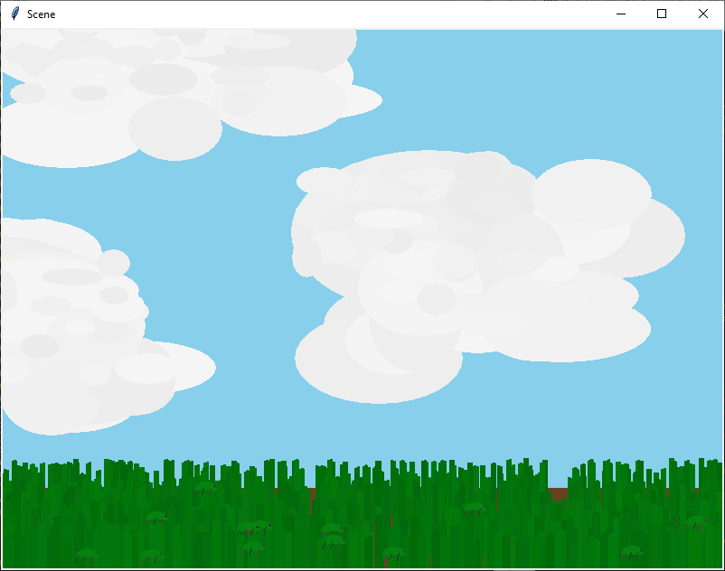

05 Prove: Draw a Scene
Overview
Prove that you can write and call functions by writing a program that draws an outdoor scene in a window.
Problem Statement
Most modern computer operating systems have graphical user interfaces (GUIs) that are rich with colors, icons, images, menus, tabs, buttons, text fields, sliders, scroll bars, etc. However, many Python programs are designed to run in a console window, also called a terminal window, to read user input from a keyboard, and to print text as output to the console window. This means that many Python programs are not designed and written to take advantage of the rich features of graphical user interfaces.
Python includes two competing libraries of code named
tkinter and kivy that enable a program to
have a user interface. Writing a program with a complete GUI is a
large task. During this lesson and the next lesson, you will write a
Python program that uses the tkinter library and that
draws a semi-realistic scene in a graphical window similar to this
scene:

Helpful Documentation
- A tutorial about drawing with tkinter
- Reference for tkinter Canvas widget
Assignment
Begin your program by copying and pasting the following code into
a new file named scene.py. This beginning code imports
several parts of the tkinter library and creates a
window and a canvas that your program can draw to.
from tkinter import Tk, Canvas, Frame, BOTH
def main():
root = Tk()
scene = Scene()
root.geometry("800x600")
root.mainloop()
class Scene(Frame):
def __init__(self):
super().__init__()
self.initUI()
def initUI(self):
self.master.title("Scene")
self.pack(fill=BOTH, expand=1)
canvas = Canvas(self)
draw_scene(canvas, 0, 0, 799, 599)
canvas.pack(fill=BOTH, expand=1)
def draw_scene(canvas, left, top, right, bottom):
"""Draw a scene in the canvas. left, top, right, and bottom contain
the extent in pixels of the region where the scene should be drawn.
left - left side of region; less than or equal to right
top - top of the region; less than or equal to bottom
right - right side of the region
bottom - bottom of the region
The width and height of the region can be calculated like this:
width = right - left + 1
height = bottom - top + 1
"""
canvas.create_oval(left + 20, top + 40, right - 60, bottom - 80,
outline="#404040", width=4, fill="#2040e0")
main()Sample Run
>
Testing Procedure
Verify that your program works correctly by following each step in this testing procedure: